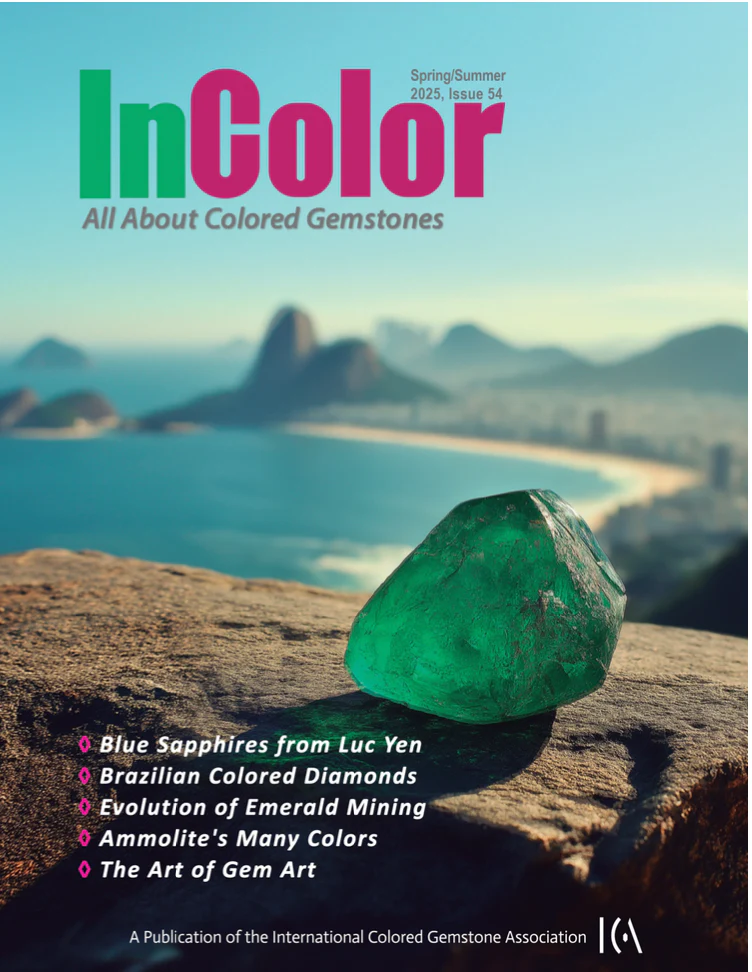

L'excellence créative et l'expertise gemmologique de la Maison Elke Berr célébrées par la presse internationale de luxe et de haute spécialité. Une rétrospective éditoriale témoignant d'un savoir-faire unique.
Elke Berr Créations s'associe fièrement à l'organisation Opera for Peace pour soutenir et propulser les talents artistiques émergents à travers le monde. Cette collaboration unique explore la synergie créatrice et le pouvoir transformateur de la musique classique et de la haute joaillerie, célébrant l'excellence et la transmission du savoir-faire.
Lire l'article →
Pour toute demande d'interview, d'accréditation ou de prêt de bijoux d'exception,
notre département relations médias est à votre entière disposition.
office@berrandpartners.ch
+41 22 310 61 10
Maison Elke Berr Creations · Rue du Cendrier 12-14 · 1201 Genève